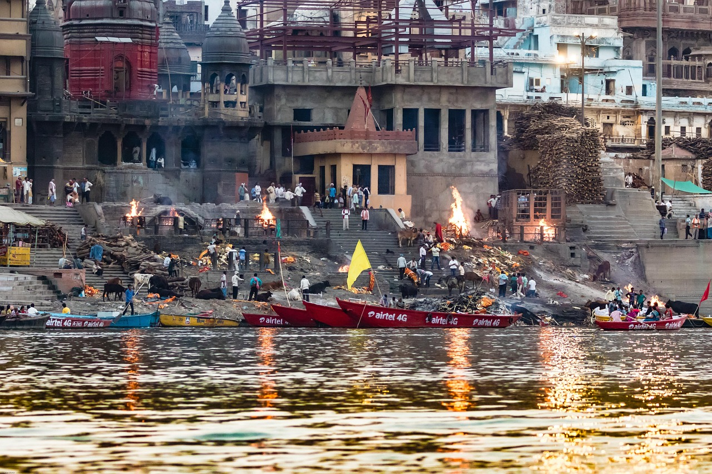
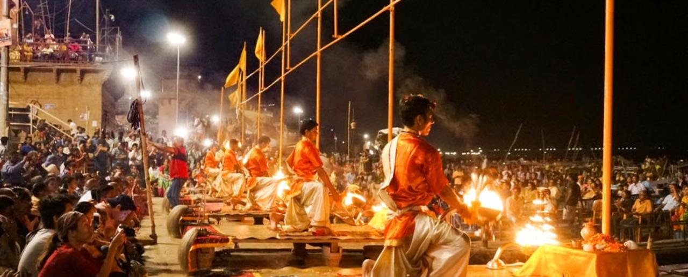
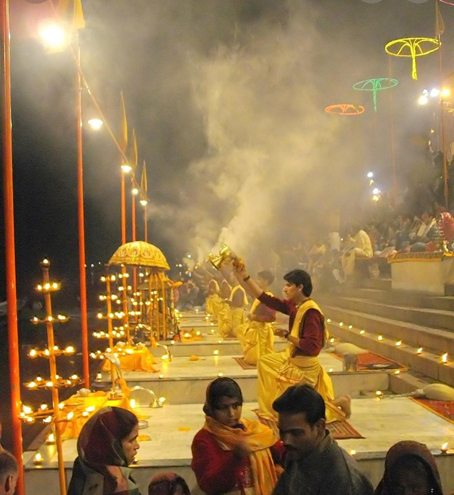
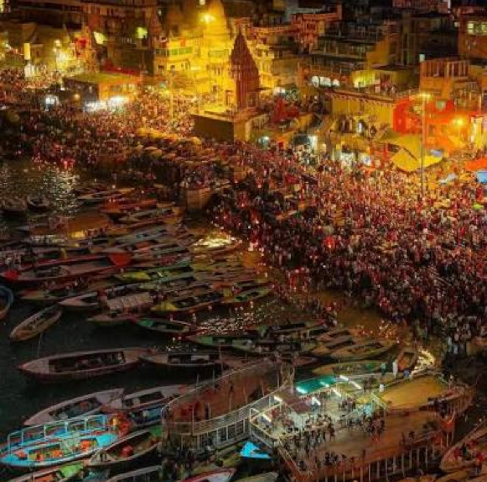
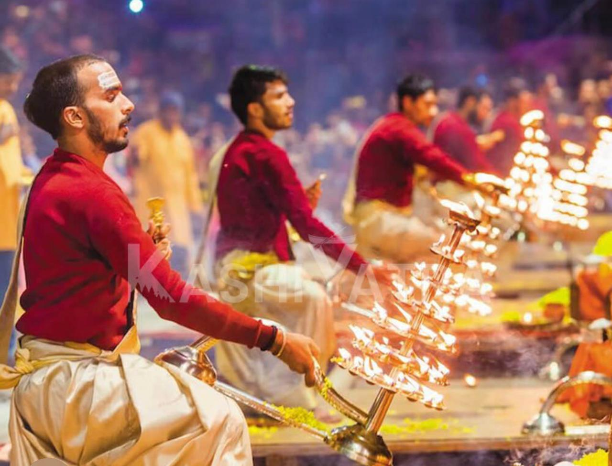

Kashi tours
Comfortable routes for ghats, temples, Sarnath and family visits.
View toursPunya Yatra helps families, senior visitors and devotional groups plan darshan, rituals, kathas and yagyas with simple guidance and warm coordination.

Start with a simple plan. Tell us your dates, family size and main purpose. We help you shape a comfortable route.
Keep the experience simple: tours, rituals, kathas, yagyas and a direct contact path.
Comfortable routes for ghats, temples, Sarnath and family visits.
View toursRudrabhishek, puja and sankalp planning with clear coordination.
View ritualsSupport for devotional gatherings and special family occasions.
View kathasFor many families, Varanasi is not only a destination. It is memory, devotion, food, lanes, ghats, darshan and quiet moments. The site keeps that feeling, while the code stays small.



